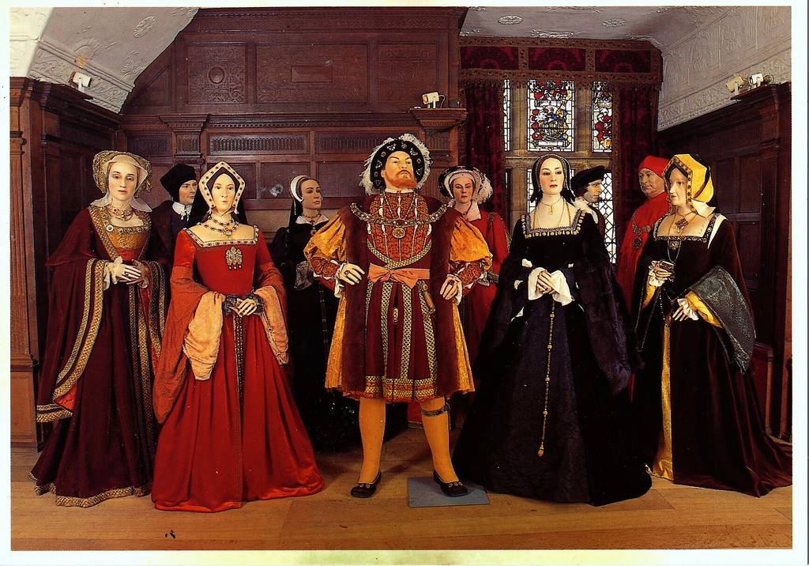

Henry VIII
One man, six wives.

A photo from a wax museum showing Henry VIII (middle) and his six wives. From left to right: Catherine of Aragon, Anne Boleyn, Jane Seymour, Anne of Cleves, Catherine Howard, Catherine Parr.
Chronological list of Henry's wives and what happened to end their marriage to the king:
- Catherine of Aragon - Divorced. After 24 years married in which she never birthed a son, King Henry divorced her in favor of a younger woman.
- Anne Boleyn - Beheaded. After giving birth to a daughter, then having two miscarriages, King Henry saw her inability to birth a son as betrayal, and he had her beheaded.
- Jane Seymour - Died. She died from an infection after giving birth to a son, future Edward VI.
- Anne of Cleves - Divorced. She was suggested to him by the court for political and religous reasons, but the marriage was never comsummated and King Henry soon divorced her for another woman.
- Catherine Howard - Beheaded. She was beheaded after having an affair with two other men.
- Catherine Parr - Survived him. She also reconciled him with his daughters and put them back in the line of succession after Edward.
You can read more about Henry VIII on his Wikipedia Page.